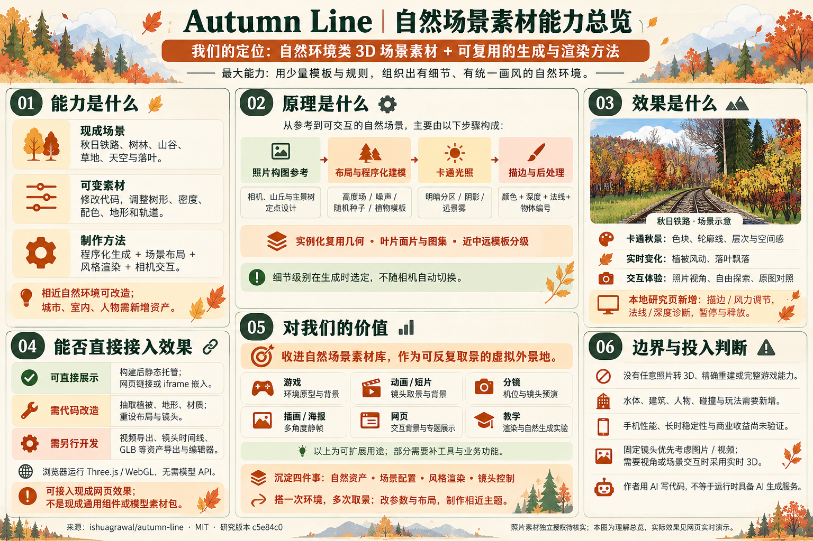

可漫游的卡通秋日自然场景
程序化建模与 Three.js 实时呈现铁路、树林和山谷，结合卡通光影、轮廓线、风动与落叶；可切换照片视角、自由探索和原图对照。
AUTUMN LINE / A NATURAL SCENE ASSET
自然环境类 3D 场景素材，加上一套可复用的生成与渲染方法。
搭一次环境，多次取景；改参数与布局，制作相近主题。
一处虚拟外景地，
一组自然场景素材，
一套制作方法。
我们的定位：自然场景素材库中的一个完整案例。最大的能力，是用少量模板和规则，组织出有细节、有统一画风的自然环境。现成可用的是秋日铁路；相近主题可通过代码改造。

程序化建模与 Three.js 实时呈现铁路、树林和山谷，结合卡通光影、轮廓线、风动与落叶；可切换照片视角、自由探索和原图对照。
植物模板、叶片图集、确定性随机、高度场、主景布局与规则散布、实例化绘制、卡通光照与描边，以及场景配置和镜头控制。
游戏环境、动画与短片背景、分镜机位预演、插画海报静帧、交互网页和图形教学。通用组件、镜头时间线与导出工具需继续开发。
构建后静态托管，以链接或 iframe 接入秋日铁路，运行不需要模型 API。
调整树形、密度、配色、地形、轨道和相机。新主题仍需重新设计布局。
视频导出、镜头时间线、GLB 等资产导出、编辑器和引擎材质适配。
现成场景包括秋日铁路、树林、山谷、草地、天空与落叶。树木和地形由程序构造，位置、形态、数量和色彩可以通过修改代码调整；目前没有通用的可视化场景编辑器。程序化生成、布局、风格渲染与相机交互共同构成一个可运行的自然环境案例。
参考照片用于确定构图；代码设定相机、轨道、山丘与主景树。高度场、噪声、随机种子和植物模板生成几何，实例化复用模型，叶片面片与图集表现树冠。卡通光照划分明暗，后处理依据深度、法线和物体编号描边。近中远模板在生成时选定，不随相机自动切换。
颜色块、轮廓线、阴影与雾形成风格和远近层次；植被风动、落叶飘落带来动态。上游提供照片视角、自由探索与原图对照。本研究页额外提供描边和风力调节、法线和深度诊断、暂停、精度控制及释放重载。页面性能采样不代表所有设备表现。
将整个 web/ 目录静态托管后，可以链接研究首页，或用 iframe 嵌入 scene.html 展示场景。需要保留其相对目录和资源文件；浏览器需支持相应的 WebGL 渲染能力。嵌入下方的完整研究页可保留参数面板；单独嵌入场景页则使用其原有观看控件。
<iframe
src="你的部署地址/scene.html"
title="Autumn Line 秋日铁路"
width="100%" height="680" loading="lazy"
style="border:0">
</iframe>素材主要以 Three.js 源码和实时渲染效果提供。把单棵树接入另一个 Three.js 项目，要处理几何、材质、纹理及全局参数的依赖；接入 Blender、Unity 等还需模型导出与材质重建，自定义卡通着色器不会自动迁移。仓库没有现成 GLB/FBX 资产包，也没有视频制作流水线。父页参数协议仅支持本研究页的同源控制。
直接价值是保留一处可漫游、可反复取景的秋日铁路。扩展价值是通过调参数、换布局和安排镜头制作相近环境，减少重复搭建。可用于游戏环境原型、动画和短片背景、分镜机位预演、插画与海报静帧、网页交互背景及图形技术教学。它提供环境基础；视频录制/导出、镜头时间线、业务热点、角色、碰撞和玩法需按用途补齐。
长期沉淀四件事：自然资产、场景配置、风格渲染、镜头控制。上述应用是扩展方向，不是已经交付的全套工具；效率收益需要用第二个场景验证。现阶段归入素材与技术参考，优先级取决于是否出现相近自然环境需求。
没有任意照片转 3D、精确空间重建或完整游戏能力。河流需要补水体，城市需要补建筑，人物、室内和工业产品也需新建资产。作者用 AI 写代码，不代表运行时具备 AI 生成服务。真实手机性能、长时稳定性和商业收益尚未验证。固定镜头背景可优先使用图片或视频，确实需要视角或场景交互时再采用实时 3D。
上游源码为 MIT，参考照片的摄影作者和独立素材授权未注明，商业使用时需另行核实。
地形高度函数与噪声塑造山谷；轨道提供连续的空间基准；重要树木按照片摆放，外围森林按密度和物种规则散布。可沉淀的是“少量重点布置 + 大量规则填充”的场景方法。
把写在代码里的相机、调色板和主景位置抽成场景配置。替换照片不会自动重建世界。
layout.ts ↗自定义 GLSL 将受光面划为暗部、亮部和高光，加入冷色阴影、边缘光与远景雾。碎石和树皮用程序纹理补充细节，统一配色让不同物体保持同一画风。
风格材质与调色板预设。需要一并整理光源、阴影及透明叶片约定，不能只复制一个片元函数。
toon.ts ↗一组渲染目标存颜色，另一组存法线、深度与物体编号。后处理读取邻近像素，在信息发生突变的位置描边；植被另设规则，避免重叠叶片变成密集黑线。
选择“轮廓提取”，再把轮廓强度调到 0，观察边缘层消失。深度图按 50 米周期重复显示，不是线性测距图。
post.ts ↗树木和草叶通过实例化复用模型，树冠结合叶片面片与体积块。近、中、远模板在生成时按距原点的距离选择；远景还用着色器表现树冠纹理。
这不是随相机移动自动切换的 LOD。远处植物靠近后不会自动变精细；森林分布也偏向原照片视角。
forest.ts ↗OUR TAKE
最大的价值是现成自然环境与可改造的生成规则。搭一次环境，多次取景；通过改参数、换布局和安排镜头，制作相近主题。素材以源码和实时效果提供，尚未抽成通用模型包。
固定镜头的装饰背景，用图片或视频通常更经济。
用于游戏环境、动画与短片背景、分镜取景、插画或海报静帧。镜头时间线、高清输出和资产导出需按用途补齐。
可以接入现成三维网页，或通过参数实验解释画风与自然生成。业务热点、教学任务与设备适配仍需补充。
没有图片重建模型、真实测量或自动生成接口。作者使用 AI 写代码的经历，不等于项目提供 AI 生成服务。
本页由上游源码构建并增加中文研究界面、参数实验与生命周期管理。预览图为作者提供的截图；实时场景需主动启动。没有调用在线生成模型，也没有依赖作者的演示站点。
上游：Ishu Agrawal / autumn-line · MIT · 研究版本 c5e84c0 · 2026-10-22。参考照片随上游仓库提供，原始摄影作者与独立授权未注明，商业复用前应单独核实。设备兼容性与验证范围见研究文档。